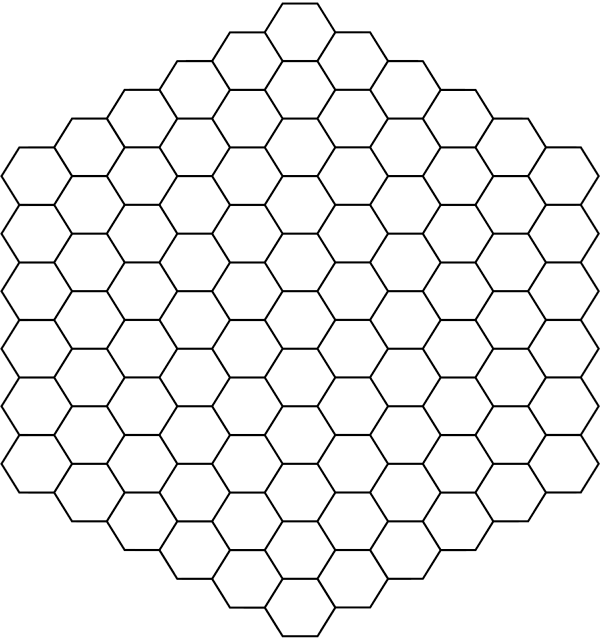

10 Recreating a Real-World Animation¶
Building a component based on an existing UI solution differs from implementing something from scratch following your idea or a designer’s prototype. The only thing you have at hand is an hours-long-polished, brought-to-perfection version of somebody’s vision of functionality. You can’t exactly see the steps they’ve taken or the iterations they’ve needed to get the result.
For example, take a look at Apple’s Honeycomb grid, the app launcher component on the Apple Watch:

The view offers an engaging and fun way of navigation while efficiently utilizing limited screen space on wearable devices. The concept can be helpful in various apps where a user is offered several options.
In this chapter, you’ll recreate it to help users pick their topics of interest when registering on an online social platform:
Note
The calculations for drawing the grid would not be possible without Amit Patel’s excellent work in his guide on hexagonal grids.
This time, you’ll start entirely from scratch, so don’t hesitate to create a new SwiftUI-based project yourself or grab an empty one from the resources for this chapter.
Back to the grid. The essential piece of the implementation is the container’s structure. In this case, it’s a hexagonal grid: each element has six edges and vertices and can have up to six neighbors.

First, you need to know the fundamentals of the grid, such as its coordinate system and the implementation of some basic operations on its elements.
Applying Cube Coordinates to Building a Hexagonal Grid¶
While multiple coordinate systems can be applied for building a hexagonal grid, some are better known and easier to research. In contrast, others can be significantly more complex, obscure and rarer to find on the internet. Your choice will depend on your use case and the requirements for the structure.
Cube coordinates are the optimal approach for the component you’ll replicate.
For a better understanding, picture a 3-dimensional stack of cubes:
If you place this pile of cubes inside the standard coordinate system and then diagonally slice it by a x + y + z = 0 plane, the shape of the sliced area of each cube will form a hexagon:
All the sliced cubes together build a hexagonal grid:
As you’re only interested in the grid itself, namely the area created by the plane slicing the pile of cubes, and not in all the cubes’ volume below or above the plane, from now on you will work with coordinates belonging to the x + y + z = 0 area. That means, if xis 5, and y is -3, z can only be -2, to satisfy the equation, otherwise the said point doesn’t belong to the plane, or to the hexagonal grid.
There are a few advantages to the cubes coordinate system approach:
- It allows most operations, like adding, subtracting or multiplying the hexagons, by manipulating their coordinates.
- The produced grid can have a non-rectangular shape.
- In terms of hexagonal grids, the cube coordinates are easily translatable to the axial coordinate system because the cube coordinates of each hexagon must follow the
x + y + z = 0rule. Since you can always calculate the value of the third parameter from the first two, you can omit thezand operate with a pair of values -xandy. To avoid confusion between the coordinate system you’re working with in SwiftUI and the axial one, you’ll refer to them asq,randsin this chapter. You may often see this same approach in many other resources on hexagonal grids’ math, but in the end the names are arbitrary and are up to you.
Now it’s time to turn the concept into code.
Create a new file named Hex.swift. Inside the file, declare Hex and add a property of type Int for each axis of the coordinate system:
struct Hex {
let q, r: Int
var s: Int { q - r }
}
Since the value of s always equals -q - r, you use a computed property for its value.
Often, you’ll need to verify whether two hexagons are equal. Making Hex conform to Equatable is as easy as adding the protocol conformance to the type:
struct Hex: Equatable
You can add two hexagons by adding their q and r properties, respectively. Swift includes another protocol you can use to naturally add and subtract two types together — AdditiveArithmetic. Add the following conformance to the bottom of the file:
extension Hex: AdditiveArithmetic {
static func - (lhs: Hex, rhs: Hex) -> Hex {
Hex(
q: lhs.q - rhs.q,
r: lhs.r - rhs.r
)
}
static func + (lhs: Hex, rhs: Hex) -> Hex {
Hex(
q: lhs.q + rhs.q,
r: lhs.r + rhs.r
)
}
static var zero: Hex {
.init(q: 0, r: 0)
}
}
You have to provide three pieces to conform to AdditiveArithmetic: How to add hexagons, how to subtract hexagons, and what is considered the zero-value of a hexagon.
By incrementing or decrementing one of the two coordinates, you indicate a direction toward one of the neighbors of the current hexagon:
Since each of the directions from a hexagon piece has its own relative q and rcoordinate, you can use Hex to represent them according to the chart above. Add the following code as an extension to Hex:
extension Hex {
enum Direction: CaseIterable {
case bottomRight
case bottom
case bottomLeft
case topLeft
case top
case topRight
var hex: Hex {
switch self {
case .top:
return Hex(q: 0, r: -1)
case .topRight:
return Hex(q: 1, r: -1)
case .bottomRight:
return Hex(q: 1, r: 0)
case .bottom:
return Hex(q: 0, r: 1)
case .bottomLeft:
return Hex(q: -1, r: 1)
case .topLeft:
return Hex(q: -1, r: 0)
}
}
}
}
Now fetching one of the current hex’s neighbors is as easy as adding two Hexinstances. Add the following method to your Hex struct:
func neighbor(at direction: Direction) -> Hex { // 1
return self + direction.hex // 2
}
Here’s a code breakdown:
- Using the
directionenum, you indicate which neighbor you want to get. - Then, you get the direction’s coordinate and add it to the current coordinate.
Since obtaining a neighboring hexagon is now possible, you can also add a function to verify whether two hexagons are, in fact, neighbors:
func isNeighbor(of hex: Hex) -> Bool {
Direction.allCases.contains { neighbor(at: $0) == hex }
}
To check whether two hexagons stand side-to-side, you iterate over all six directions and check if a hexagon in the current direction equals the argument. Using contains(where:) will return true as soon as it finds a matching neighbor, or return false if hex isn’t a neighbor of the current coordinate.
Finally, you must obtain its center’s (x, y) coordinates to render each element.
To calculate the center’s position of a hexagon with the coordinates of (q, r) relative to the root hexagon in (0, 0), you need to apply the green (pointing sideways) vector - (3/2, sqrt(3)/2)- q times and the blue (pointing down) vector - (0, sqrt(3)) - r times. To allow for the scaling of a hexagon, you need to multiply the resulting values by the size of the hexagon.
First, in ContentView.swift, add the following constant above to the top of the file so you can change it later if you need to:
let diameter = 125.0
Here, you add the value for the diameter of the circle you’ll draw in place of each hexagon on the grid. Where the size of a hexagon usually refers to the distance from its center to any of its corners:
Therefore, a regular hexagon’s width equals 2 * size, and the height is sqrt(3) * size.
Add the following method calculate the Hex’s center, inside the struct:
func center() -> CGPoint {
let qVector = CGVector(dx: 3.0 / 2.0, dy: sqrt(3.0) / 2.0) // 1
let rVector = CGVector(dx: 0.0, dy: sqrt(3.0))
let size = diameter / sqrt(3.0) // 2
let x = qVector.dx * Double(q) * size // 3
let y = (qVector.dy * Double(q) +
rVector.dy * Double(r)) * size
return CGPoint(x: x, y: y)
}
Here’s a code breakdown:
- First, you construct the green and blue vectors from the diagram above.
- Then, you calculate the size of the hexagon based on the formula for the height.
- You calculate the total horizontal and vertical shifts by multiplying a vector’s coordinates by the hexagon’s coordinates and size. Because a regular hexagon has uneven height and width, you use the same value for both height and width to fit it into a “square” shape because you’re going to draw circles in place of hexagons, which would leave blank spaces on the sides otherwise.
Constructing a Hexagonal Grid¶
To represent an element of a hexagonal grid, make a new file named HexData.swift and define a struct inside it named HexData:
struct HexData {
var hex: Hex
var center: CGPoint
var topic: String
}
Besides the grid’s coordinates, HexData contains the coordinates of its center to render it and a topic, which the hexagon will display.
Make HexData conform to Hashable so you can iterate over a collection of it later:
struct HexData: Hashable
The compiler will prompt you to add hash(into:):
func hash(into hasher: inout Hasher) {
hasher.combine(topic)
}
In the current case, the represented topic can’t be reused multiple times and, in a way, is a unique identifier of a HexData instance, sufficient for hash generation.
Iterating Over the Grid¶
You need to develop a method to generate an array of Hex instances to build a honeycomb grid.
Add the following declaration in the HexData struct:
static func hexes(for topics: [String]) -> [Self] {
return []
}
You’ll iterate over the elements moving along a spiral from the center of the grid toward the last ring. To keep track of the current coordinates and a ring’s index, add the following variables to the top of the newly created method:
var ringIndex = 0
var currentHex = Hex(q: 0, r: 0)
Then, add a variable to append the hexes you’re about to create, and initialize it with the root hexagon:
var hexes = [Hex(q: 0, r: 0)]
Now, the Direction enum you added earlier comes in handy since you need to move from one hexagon to another along a spiral. Add a variable to keep the directions along with their indices:
let directions = Hex.Direction.allCases.enumerated()
To start the iterations, first, create an outer while-loop until you reach the necessary amount of elements:
repeat {
} while hexes.count < topics.count
Inside the loop, add the following lines:
directions.forEach { index, direction in // 1
let smallerSegment = index == 1 // 2
let segmentSize = smallerSegment ? ringIndex : ringIndex + 1 // 3
for _ in 0..<segmentSize {
// TODO
}
}
ringIndex += 1 // 4
Here’s a code breakdown:
- First, you iterate over the directions to reach the hexagons along the whole spiral.
- As you progress along the spiral, the amount of hexagons grows with each consecutive ring. One of the six segments of each ring always has one less element than the five others though: the first spiral’s ring contains only five elements. Likewise, the second one has
6 (amount of directions) * 2 (ring index + 1) - 1 = 11elements, the third -6 * 3 - 1 = 17, and so on: - For a smaller segment you use
ringIndexas the amount of hexagons in it, andringIndex + 1otherwise. - After iterating over all the directions, you always increment the index of the spiral’s ring.
Then, inside the inner loop, replace // TODO with:
guard hexes.count != topics.count else { break } // 1
currentHex = currentHex + direction.hex // 2
hexes.append(currentHex)
Here’s a breakdown:
- As a precaution, you verify if any new hexagons are still needed. Otherwise, you break out of the inner loop.
- You update the
currentHexby adding the currentdirection’shexto it, namely adding their respective parameters -q,rands, and append the result to thehexesarray.
Finally, update the return-statement to map the array you’ve just computed to an array of HexData:
return hexes.enumerated().map { index, hex in
HexData(
hex: hex,
center: hex.center(),
topic: topics[index]
)
}
Above, you calculate the center for each hexagon and fetch the respective topic from the array of strings.
Rendering the Hexagons¶
You’re almost ready to display the first version of your grid view on the screen.
Create a new SwiftUI View file named HexView.swift, and add a property of type HexData inside the generated struct:
let hex: HexData
Inside HexView‘s body, add a ZStack containing a Circle and a label to represent the grid’s hexagon:
ZStack {
Circle()
.fill(Color(uiColor: UIColor.purple))
Text(hex.topic)
.multilineTextAlignment(.center)
.font(.footnote)
.padding(4)
}
.shadow(radius: 4)
.padding(4)
.frame(width: diameter, height: diameter)
To enable the preview, update HexView’s preview like so:
HexView(
hex: HexData(
hex: .zero,
center: .zero,
topic: "Tech"
)
)
Run the preview, and you should see a circle representing the current hex piece, with a topic in it:
Now, go to ContentView and replace its body content with a VStack:
VStack {
Text("Pick 5 or more topics you're most interested in:")
.font(.subheadline)
// TODO
}
Then, add these properties to the ContentView to keep the HexData array and a collection of topics:
@State var hexes: [HexData] = []
private let topics = [
"Politics", "Science", "Animals",
"Plants", "Tech", "Music",
"Sports", "Books", "Cooking",
"Traveling", "TV-series", "Art",
"Finance", "Fashion"
]
The only thing missing is a container for the HexViews.
Building a Custom Layout¶
At WWDC22, Apple introduced a new convenient way of composing more complex containers, the Layout protocol, which is available on iOS 16.
There are two methods you must implement to conform to this new protocol:
sizeThatFits(proposal:subviews:cache:), where you define the size your component requires to place its subviews.placeSubviews(in:proposal:subviews:cache:), responsible for placing each subview in the container.
Both methods receive a ProposedViewSize argument containing measurements suggested by SwiftUI. Additionally, the Layout offers caching functionality to improve your app’s performance when a container needs to recalculate its size and the positions of its subviews often.
Create a new Swift file named HoneycombGrid.swift and add the following struct to it:
import SwiftUI
struct HoneycombGrid: Layout {
let hexes: [HexData]
}
You’ll use the hexes property to fetch each hexagon’s center and position it inside its container.
Now, the compiler will prompt you to implement the methods mentioned above so the struct conforms to the Layout protocol:
func sizeThatFits(
proposal: ProposedViewSize,
subviews: Subviews,
cache: inout ()
) -> CGSize {
// TODO
}
func placeSubviews(
in bounds: CGRect,
proposal: ProposedViewSize,
subviews: Subviews,
cache: inout ()
) {
// TODO
}
Start with sizeThatFits(proposal:subviews:cache:). You want the container to take all the space available to it:
CGSize(
width: proposal.width ?? .infinity,
height: proposal.height ?? .infinity
)
If the measurement proposed by SwiftUI isn’t available, you return .infinity as both width and height.
Inside placeSubviews(in:proposal:subviews:cache:), you iterate over the subviews and fetch the corresponding hexagon from the hexes array:
subviews.enumerated().forEach { i, subview in
let hexagon = hexes[i]
// TODO
}
Then, add the following code snippet inside the loop:
let position = CGPoint( // 1
x: bounds.origin.x + hexagon.center.x + bounds.width / 2,
y: bounds.origin.y + hexagon.center.y + bounds.height / 2
)
// 2
subview.place(
at: position,
anchor: .center,
proposal: proposal
)
Here’s a code breakdown:
- To calculate the position for each subview, you sum the coordinates of the container’s origin, hexagon’s center and half of the corresponding container’s measurement. The origin is important to consider because a view’s bounds often don’t correspond to the whole screen’s bounds, and its origin can differ from the (
0,0) point. Since you use the (0,0) coordinates for the root hexagon, you addbounds.width / 2andbounds.height / 2to center the subviews around theHoneycombGrid’s center instead of its origin. - Then, you use
place(at:anchor:proposal:)to position the subview at the point you just calculated using.centeras an anchor.
Back in ContentView, below Text, add a HoneycombGrid containing all the hexagons to display in place of the // TODO comment:
HoneycombGrid(hexes: hexes) {
ForEach(hexes, id: \.self) { hex in
HexView(hex: hex)
}
}
Finally, attach an .onAppear modifier to HoneycombGrid to compute the hexagons’ positions right before ContentView displays:
.onAppear {
hexes = HexData.hexes(for: topics)
}
Run your app to see the outcome:
How cool is that? :]
Next, you’ll enable dragging gesture handling to let users pan the component to access the corner cells. Additionally, users must be able to pick topics, so you’ll also implement tap gesture handling.
Gesture Handling¶
Start with dragging gestures. Add a new @GestureState and @State properties to the ContentView to keep track of the offset:
@GestureState var drag: CGSize = .zero
@State var dragOffset: CGSize = .zero
Add a method to ContentView to invoke once a user completes a drag gesture:
private func onDragEnded(with state: DragGesture.Value) {
}
First, update dragOffset when the gesture is over to prevent the grid from jumping back to its initial position by appending the latest translation state to the values of dragOffset:
dragOffset = CGSize(
width: dragOffset.width + state.translation.width,
height: dragOffset.height + state.translation.height
)
If you take a closer look at the original Apple Watch honeycomb grid component, you’ll notice that once you stop dragging the view, it moves slightly further, as if inertia was affecting it.
That may sound complicated to implement. But SwiftUI comes to the rescue and offers the predictedEndTranslation property of the DragGesture.Value, which produces a similar result if you apply it to the offset over time.
When a user drags a view, SwiftUI calculates the velocity and direction of the gesture and computes the approximate end translation. The actual end translation is often slightly shorter than the predicted one. Therefore the difference between those values comes in handy to recreate the effect from the original component.
To apply the difference between two offsets, first, create a variable right at the beginning of onDragEnded(with:) to keep the initial value of the offset:
let initialOffset = dragOffset
Then, at the bottom of onDragEnded(with:), apply the predicted translation as follows:
var endX = initialOffset.width +
state.predictedEndTranslation.width * 1.25
var endY = initialOffset.height +
state.predictedEndTranslation.height * 1.25
You add the width and height of the predicted translation to initialOffset and the 1.25 multiplier to exaggerate the effect slightly.
Then, you must ensure the user can’t accidentally drag the grid out of the screen’s bounds. To do so, you’ll verify that the offset distance value is always smaller than the distance from the center to the last hexagon. Add the following code below the variables you just added:
let lastHex = hexes.last?.center ?? .zero
let maxDistance = sqrt(
pow((lastHex.x), 2) +
pow((lastHex.y), 2)
) * 0.7
if abs(endX) > maxDistance {
endX = endX > 0 ? maxDistance : -maxDistance
}
if abs(endY) > maxDistance {
endY = endY > 0 ? maxDistance : -maxDistance
}
If the offset value is larger, you replace it with the maximum value allowed. The 0.7multiplier ensures a few more circles are always visible to prevent the screen from going almost completely blank when the dragging value reaches its maximum.
After enforcing the dragging bounds, apply the calculated translation by adding the following code:
withAnimation(.spring()) {
dragOffset = CGSize(
width: endX,
height: endY
)
}
Now, similar to the way you did for the seating chart in earlier chapters, add a DragGesture to HoneycombGrid and invoke the newly created onDragEnded(with:)in its onEnded callback:
.simultaneousGesture(DragGesture()
.updating($drag) { value, state, _ in
state = value.translation
}
.onEnded { state in
onDragEnded(with: state)
}
)
You use .simultaneousGesture because you’ll add a couple of gesture handlers later, and SwiftUI must recognize them simultaneously.
The last step is to apply the offset to the HoneycombGrid. Add .offset above .onAppear:
.offset(
CGSize(
width: drag.width + dragOffset.width,
height: drag.height + dragOffset.height
)
)
Run the app to try the gesture handling out:
Selecting a Grid’s Hexagon¶
To highlight the selected cells, add these properties in HexView below the hexproperty:
let isSelected: Bool
let onTap: () -> Void
Update .fill to alternate colors depending on the state of the hexagon:
.fill(isSelected ? .green : Color(uiColor: .purple))
Then, add a tap gesture handler to Circle below .fill:
.onTapGesture {
onTap()
}
Update HexView_Previews once again to display HexView’s preview:
HexView(
hex: HexData(
hex: .zero,
center: .zero,
topic: "Tech"
),
isSelected: false,
onTap: {}
)
Go back to ContentView, and update HexView’s initializer to include isSelectedand onTap:
HexView(
hex: hex,
isSelected: selectedHexes.contains(hex)
) {
select(hex: hex)
}
Then, add a new property to ContentView to keep the currently selected cells:
@State var selectedHexes: Set<HexData> = []
Below ContentView‘s body, add a new method to handle a cell’s selection:
private func select(hex: HexData) {
}
Place the following code inside select(hex:):
if !selectedHexes.insert(hex).inserted { // 1
selectedHexes.remove(hex)
}
withAnimation(.spring()) { // 2
dragOffset = CGSize(width: -hex.center.x, height: -hex.center.y)
}
Here’s what you did:
- You attempt to insert the selected
hexinto the set and check if it was successfullyinserted. SinceSets only include unique values, adding the same value more than once will returnfalseforinserted, in which case you will remove it from the set instead. - Then, you update
dragOffsetto the opposite value of the center ofhex. This way, the grid moves to center the selected hexagon on the screen.
To give the user a hint of how many more topics they need to choose, add a text and a progress indicator at the bottom of the root VStack of ContentView’s body:
Text(
selectedHexes.count < 5
? "Pick \(5 - selectedHexes.count) more!"
: "You're all set!"
)
ProgressView(
value: Double(min(5, selectedHexes.count)),
total: 5
)
.scaleEffect(y: 3)
.tint(selectedHexes.count < 5 ? Color(uiColor: .purple) : .green)
.padding(24)
To make ProgressView update its state smoothly, attach the animation view modifier to it as follows:
.animation(.easeInOut, value: selectedHexes.count)
Run the app to see the outcome:
If you have an Apple Watch nearby, look closely at its launcher component again. When you drag the view around, the closest bubble to your finger and those surrounding it are slightly dimmed and shrunk.
You can implement this effect by adding one more gesture handler.
Go back to HexView, and add a new @Binding above onTap:
@Binding var touchedHexagon: HexData?
Then, add an .overlay to the Circle right below .fill to dim it if the user is touching it:
.overlay(
Circle()
.fill(touchedHexagon == hex ? .black.opacity(0.25) : .clear)
)
Below .onTapGesture, add .simultaneousGesture to handle one more gesture:
.simultaneousGesture(
DragGesture(minimumDistance: 0)
.onChanged { _ in // 1
withAnimation(.easeInOut(duration: 0.5)) {
touchedHexagon = hex
}
}
.onEnded { _ in // 2
withAnimation(.easeInOut(duration: 0.5)) {
touchedHexagon = nil
}
}
)
Here’s what you did:
- When the gesture is ongoing, you update
touchedHexagonwith the currentHexData. - Once the gesture ends, you set it to
nil.
Pass the following as the touchedHexagon parameter of HexView’s initializer in HexView_Previews:
HexView(
hex: HexData(hex: .zero, center: .zero, topic: "Tech"),
isSelected: false,
touchedHexagon: .constant(nil),
onTap: {}
)
Go back to ContentView, and append the following property:
@State var touchedHexagon: HexData? = nil
Then add a new variable inside ForEach above HexView’s initializer to determine whether the current cell should dim:
let hexOrNeighbor = touchedHexagon == hex ||
touchedHexagon?.hex.isNeighbor(of: hex.hex) == true
Pass touchedHexagon to the initializer of HexView:
HexView(
hex: hex,
isSelected: selectedHexes.contains(hex),
touchedHexagon: $touchedHexagon
) {
select(hex: hex)
}
Finally, add .scaleEffect to HexView:
.scaleEffect(hexOrNeighbor ? 0.9 : 1)
Run the app:
Expanding the Grid¶
The currently presented topics are rather generic. Once a user picks a topic, you could offer subtopics to them to be more specific in defining their interests.
Add a new method to calculate the positions of additional hexagons below the hexes(for:) static function you added earlier inside HexData.swift:
static func hexes(
from source: Hex,
_ array: [HexData],
topics: [String]
) -> [HexData] {
var newHexData: [HexData] = []
//TODO
return newHexData
}
The method receives the source hexagon, the one a user selected, the current array of HexData and new subtopics.
First, iterate over the potential neighbors of the source hexagon to see whether there are any empty spaces to insert the new hexagons into:
for direction in Hex.Direction.allCases {
let newHex = source.neighbor(at: direction) // 1
if !array.contains(where: { $0.hex == newHex }) { // 2
newHexData.append(HexData(
hex: newHex,
center: newHex.center(),
topic: topics[newHexData.count]
))
}
if newHexData.count == topics.count { // 3
return newHexData
}
}
Here’s a code breakdown:
- You fetch a neighboring hexagon in the current direction.
- If the array doesn’t contain a hexagon at that position, you append a new hexagon to
newHexData. - At the end of each iteration, you check if you’ve already added all the needed hexagons and return
newHexDatain such a case.
In a scenario when the source hexagon doesn’t have enough space around it to insert all the needed cells, you need to append them further away. Add the following condition below the loop:
newHexData.append(contentsOf: hexes(
from: source.neighbor(at: Hex.Direction.allCases.randomElement()!),
array + newHexData,
topics: Array(topics.dropFirst(newHexData.count))
))
Here, you pick a random neighboring hexagon and try to insert the needed hexagons near it recursively.
There can be multiple ways to approach this problem. You could always pick the last hexagon of the array as the new source or the first neighbor of the source or even come up with an algorithm to search for the nearest corner hexagon with enough spare space. In the end, the grid shouldn’t contain that many elements for the approach to make a difference: a user must be able to navigate through the whole grid without easily getting lost.
Create a new method to append subtopics in ContentView:
private func appendHexesIfNeeded(for hex: HexData) {
let shouldAppend = !hex.topic.contains("subtopic") &&
!hexes.contains(where: { $0.topic.contains("\(hex.topic)'s subtopic") })
if shouldAppend {
hexes.append(contentsOf: HexData.hexes(from: hex.hex, hexes, topics: [
"\(hex.topic)'s subtopic 1",
"\(hex.topic)'s subtopic 2",
"\(hex.topic)'s subtopic 3"
]))
}
}
You add the subtopics based on whether the current hexagon represents a subtopic or if it already contains subtopics somewhere else in the grid.
Find the condition if !selectedHexes.insert(hex).inserted { in select(hex: HexData) and replace that block with:
if selectedHexes.insert(hex).inserted {
appendHexesIfNeeded(for: hex)
} else {
selectedHexes.remove(hex)
}
Then, still in select(hex:), wrap dragOffset into the DispatchQueue.main.asyncto prevent two animations, new hexagons appearing and shifting toward the selected cell, from glitching:
DispatchQueue.main.async {
withAnimation(.spring()) {
dragOffset = CGSize(width: -hex.center.x, height: -hex.center.y)
}
}
Add .transition to HexView:
.transition(.scale)
Finally, to animate the transitions, add the following modifier to HoneycombGrid:
.animation(.spring(), value: hexes)
Rerun the app and try to select a topic:
Recreating the Fish Eye Effect¶
What makes Apple’s honeycomb grid so special and recognizable besides the grid structure is its “fish eye” effect. The cells closer to the center of the screen appear larger, while those at the corner shrink until they disappear entirely when reaching the screen’s borders.
GeometryReader is handy for determining the borders of the parent view. Wrap HoneycombGrid into a GeometryReader:
GeometryReader { proxy in
HoneycombGrid { ... }
}
Create a new method in ContentView to compute the size for each hexagon depending on its position relative to the borders of the parent view:
private func size(
for hex: HexData,
_ proxy: GeometryProxy
) -> CGFloat {
return 0
}
First, you need to calculate the total offset of a hexagon from the origin point (0, 0), counting in the position of its center and the drag gesture’s offset. Add these two variables in the beginning of the method:
let offsetX = hex.center.x + drag.width + dragOffset.width
let offsetY = hex.center.y + drag.height + dragOffset.height
Then, you calculate the amount of “excess” along the x-axis and y-axis, namely what distance the hexagon traveled behind the borders of the container along each axis starting from the (0, 0):
let frame: CGRect = proxy.frame(in: .global)
let excessX = abs(offsetX) + diameter - frame.width / 2
let excessY = abs(offsetY) + diameter - frame.height / 2
You add the total value of the diameter instead of a half because once the center of the circle is precisely at the border and only half of its diameter is technically behind the borders, you want it to shrink to 0, thus deducting its full diameter.
Finally, calculate the size based on the “excess”:
let excess = max(0, max(excessX, excessY)) // 1
let size = max(0, diameter - excess) // 2
return size
Here’s a code breakdown:
- You pick the largest excess measurement out of the two. To preserve the 1:1 ratio of the cell’s width and height, you need to decrease both by the same amount. Moreover, you only consider the values bigger than 0; a negative value would mean that the hexagon is still not close enough to a border.
- Then, you deduct the
excessfrom the size of a hexagon and return the result.
To apply the computations you just implemented, add these two variables below hexOrNeighbor inside ForEach:
let size = size(for: hex, proxy)
let scale = (hexOrNeighbor ? size * 0.9 : size) / diameter
Then, update .scaleEffect as follows:
.scaleEffect(max(0.001, scale))
Using 0.0 as a scale multiplier may produce unexpected values in the projection matrix SwiftUI applies under the hood, which you could observe from the console logs. Until this issue gets fixed, use a small value barely above 0, like 0.001, to achieve the needed effect.
Run the app and drag the grid around to see how the cells constantly change their size to fit into the container:
Only one small detail is missing to recreate the fish eye effect precisely. In Apple’s component, when the corner cells shrink, the distance between the centers of those cells decreases as well.
They move slightly closer:

Since you’ll move the corner hexagons slightly further away from the borders and decrease them simultaneously, you need to “split” the excess value you calculated above between the resizing and repositioning.
Update the signature of size(for:_:) to return a pair of values, and rename it measurement(for:_:) to keep the code base readable and clear in its intention:
private func measurement(
for hex: HexData,
_ proxy: GeometryProxy
) -> (size: CGFloat, shift: CGPoint) {
Then, add the position calculations above return and update the return value:
let shift = CGPoint(
x: offsetX > 0
? -max(0, excessX) / 3.0
: max(0, excessX) / 3.0,
y: offsetY > 0
? -max(0, excessY) / 3.0
: max(0, excessY) / 3.0
)
return (size, shift)
This way, you apply a third of the excess on both axes. Depending on whether the value of the offset is positive or negative, you set a negative or positive shift, respectively.
Now update the size variable declaration inside measurement(for::) to decrease only by three-quarters of the excess measurement:
let size = max(0, diameter - 3.0 * abs(excess) / 4)
In total, you are negating 1.0/3.0 * excess + 3.0 * excess / 4.0, which is slightly above the excess value. You do it as a precaution against the cells not having sufficient spacings or “colliding”.
Go back to ContentView’s body and replace the size and scale variables inside ForEach, since now you receive a pair of values instead of a single one from the calculations:
let measurement = measurement(for: hex, proxy)
let scale = (hexOrNeighbor
? measurement.size * 0.9
: measurement.size) / diameter
Finally, add the .offset modifier to the HexView below .scaleEffect:
.offset(CGSize(
width: measurement.shift.x,
height: measurement.shift.y
))
Build and run the app one final time to see the outcome:

Key Points¶
- When recreating an existing UI component, it’s often helpful to break larger concepts into smaller ones. For instance, find a way to build the outer parts of the component, the parent container, recreate its layout and proceed with the smaller views or child controls.
- One optimal way to build a hexagonal grid is cube or axial coordinates, with the third,
s, parameter computed as-q - r. - Apple’s new
Layoutprotocol offers a convenient way to build more complex containers. You only need two methods to implement it:sizeThatFits(proposal:subviews:cache:)andplaceSubviews(in:proposal:subviews:cache:).
Where to Go From Here?¶
In this chapter, you implemented some basic hexagonal grid operations, which helped you recreate a beautiful and fun-to-use component.
However, if you want a deeper dive into the topic of hexagonal grids, go to Red Blob Games blog. You’ll find the best and most extensive overview of the math behind the hexagonal grids, the implementation peculiarities, different coordinate systems and the existing solutions for various programming languages. Some of the functionality of the grid container in this chapter and the theoretical sections were implemented relying on this resource.